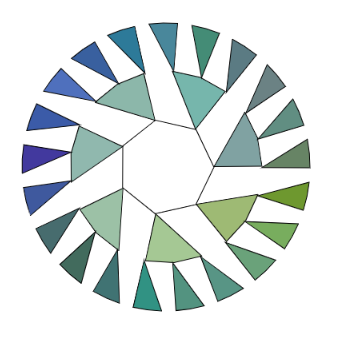
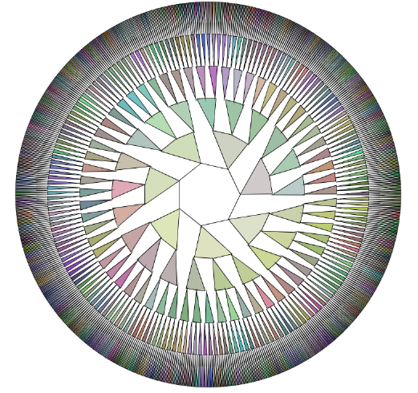
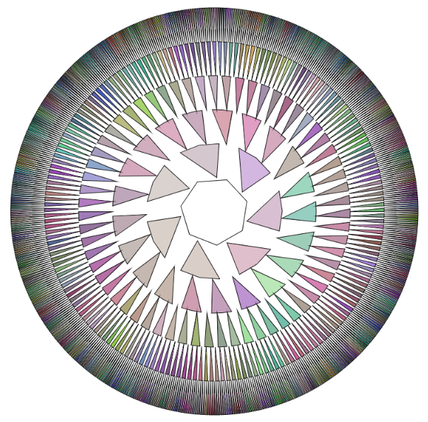
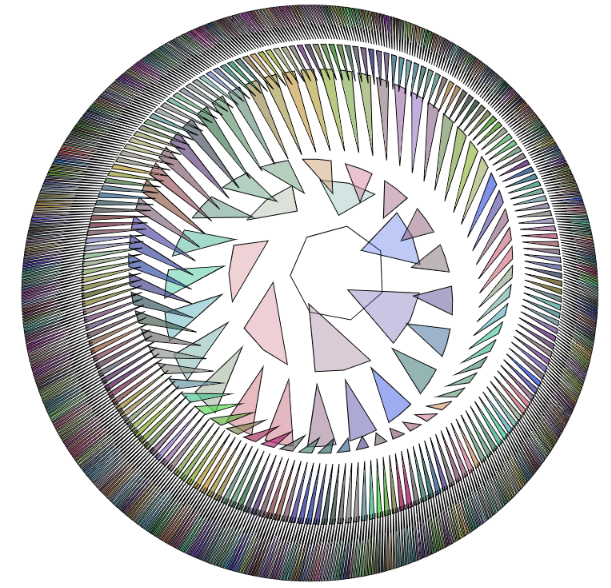

G001 - Layered Nodes
October 26th, 2018
This program experiments with layered nodes and connecting nodes in a branching out circular pattern. Pretty simple.
Each node consists of a x and a y coordinate. It starts with a shape in the center, a set of nodes that are vertices to a polygon. Then for each vertice, a amount of nodes are connected to it. This occurs for up to k layers until your browser starts freezing, trying to process so many shapes. I've found that the program works decently smoothly up to around 1400 nodes, with the following settings.
- n: base nodes = 7
- a: number of nodes per node for successive layers = 3
- k: number of layers = 6
- r: radius of each layer = 60
The equation that models the number of nodes total is:
With the current parameters, I get 1456 nodes. If I add another layer, my nodes spike up to 4372.
I connected the nodes as triangulish polygons, with one node from the previous layer and a nodes from the current layer, and then filled them in with a random color using Perlin noise. My basic output would be something like this:
Nodes0" />
With more layers, you tend to see higher layers devolve into darkness since there is a larger node density despite the increased radius size. Therefore layers beyond 7 are probably not going to look very interesting.
Nodes1" />
So after drawing a static image, the next rational thing to do is to make it dynamic. So I added rotation for each layer, based on the framecount of the program.
Nodes2" />
Tada! A rotating eyeball! Let's add an offset to each layer (but just enough so it doesn't cause layers to come out of each other).
Nodes3" />
Additional things from this program:
The coordinates of each node are determined are generated from the sine and cosine functions. I used the following formulas:
where I cycled through each node for each layer. Each node in a layer was pushed to a set called a nodeLayer, and each nodeLayer was pushed into an all encompassing set nodes.
Creating these node sets enabled me to draw shapes based on their vertices and color them in, as well as make them spin, using p5's rotate() function.
Here's a gallery of some of the Generative Art I've created with this program.